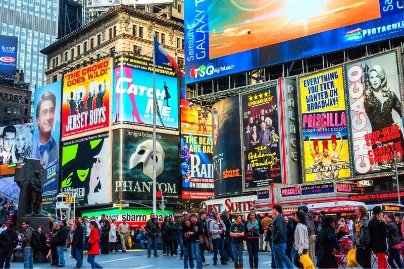
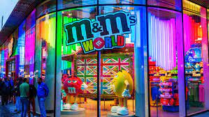
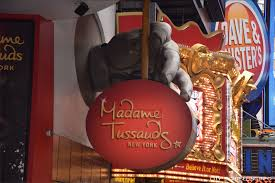

The best wax museum in the world, Madame Tussauds, is where you should go if you want to see lifelike wax replicas of your favorite actors, superheroes, and characters. Purchase tickets to a Broadway performance, which is revered and regarded as the pinnacle of theatrical productions worldwide. Catering to audiences of all ages, there is a wide range of performances, from Hamilton to The Lion King. You can take a tour of the best M&M's experience, at the M&M World, a three-story candy emporium loaded with rainbow chocolate delight. Choose your preferred color or flavor from the countless milk, peanut, and specialty M&Ms that are available on the world's most well-known candy wall, meet your favorite character, or print your personalized message—or even your own face—on M&Ms in only a few minutes at the Personalized Printer.